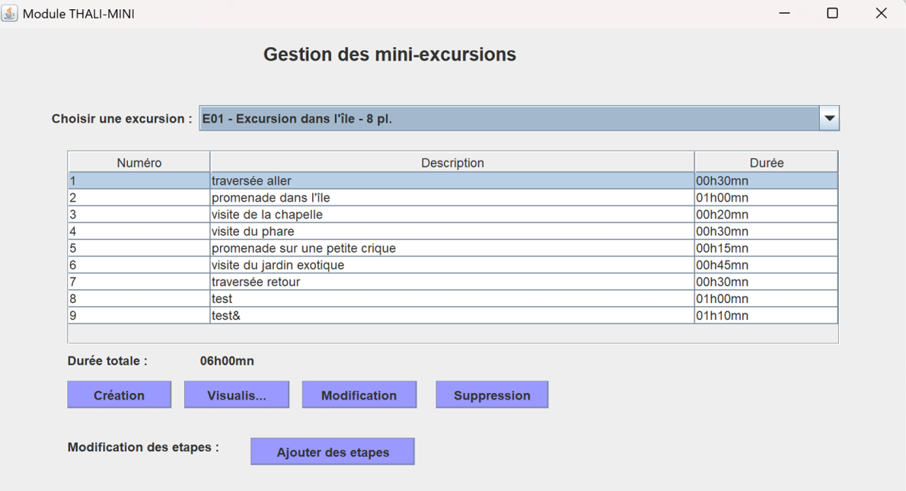

Un aperçu complet de la réalisation du projet

THALI est un centre de thalassothérapie souhaitant proposer un catalogue de mini-excursions organisées l'après-midi pour ses curistes. En tant que stagiaire chez STESIO (ESN mandatée), j'ai développé le module THALI-MINI pour gérer ces excursions et leurs étapes.
Collecte et traitement des demandes de fonctionnalités du client THALI. Implémentation des différentes étapes du CRUD selon les besoins exprimés.
Analyse du cahier des charges fourni, identification des parties prenantes (THALI, STESIO), compréhension du contexte métier de la thalassothérapie.
Organisation du travail en binôme, planification des 11 étapes du projet avec remise de livrables à chaque étape, gestion du temps et des priorités.
Utilisation de composants Swing (JFrame, JDialog, JComboBox, JTable), adaptation des classes DAO existantes, création de nouveaux composants métier.
Implémentation du pattern DAO pour l'accès à MariaDB. Développement de méthodes CRUD avec JDBC (connexion, PreparedStatement, ResultSet, transactions).
Conception et exécution de tests unitaires (JUnit), tests fonctionnels de l'interface utilisateur, validation des données saisies, vérification en base de données.
Rédaction de comptes-rendus pour chaque étape, documentation du code avec commentaires, rapports de tests, bilans des difficultés rencontrées.
Maîtrise de NetBeans pour le développement Java (débogueur, refactoring), gestion de la base de données depuis l'IDE, utilisation du connecteur JDBC.